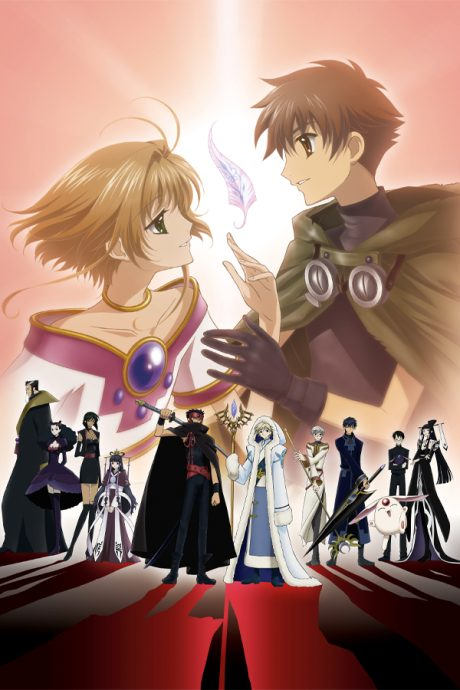
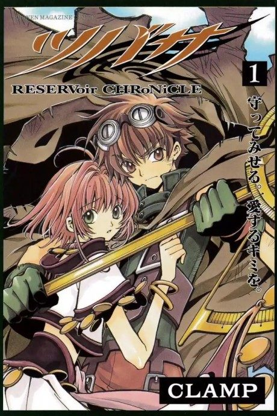

Anime
Manga2005 · Adventure, Fantasy, Romance
Tsubasa RESERVoir CHRoNiCLE
ツバサ・クロニクル
AniList7.1
Animeter—
2 seasons52 ep
MangaUnclear
Is it worth pushing through?
Built from what visitors report across all 2 seasons (52 episodes).
Loading reports…Checking what other people said about this one.
Sign in with your email at the top of the page to add your report.